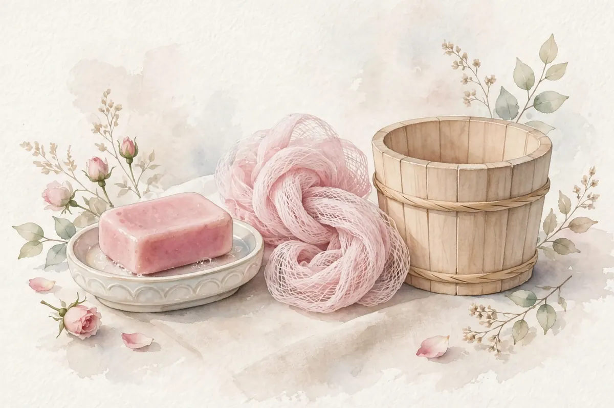
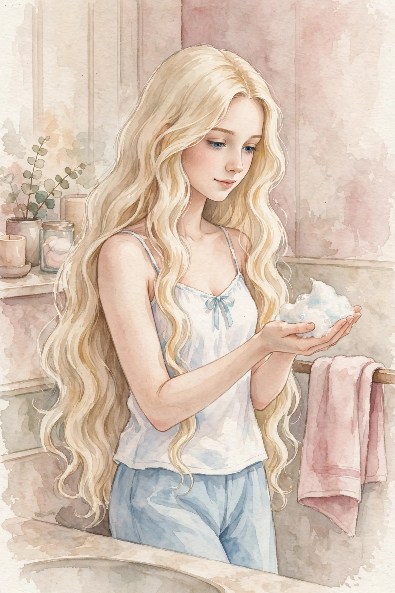

体を洗う順番の組み立て方

体を洗う順番は、人それぞれの習慣で決まっていることが多いものです。ただ、順番を意識して組み立てると、洗い残しや洗い直しが減り、入浴全体の流れが安定します。施術の現場でも、手順の順番は仕上がりを左右する要素です。同じ道具、同じ洗浄料でも、順番が決まっているかどうかで、かかる時間も疲れ方も変わってきます。この記事では、体の洗う順番の組み立て方を整理します。
基本は「上から下へ」
私の基本は、上から下へ進める流れです。首まわりから始めて、肩、腕、胸、お腹、背中、腰、脚、足先へと下りていきます。すすぎの水は上から下へ流れるので、この順番だと、洗った場所に泡が戻りにくくなります。
髪を洗う日は、髪を先に洗ってから体に進むのが組み立てやすい流れです。シャンプーやコンディショナーのすすぎが体にかかるため、体を先に洗うと洗い直しになりやすいからです。髪を洗わない日は、そのまま首まわりから始めます。入浴の前に「今日は髪を洗う日かどうか」を決めておくと、浴室での迷いが減ります。湯船につかる日は、洗う工程とつかる工程の順番も、家庭の習慣に合わせて先に決めておきます。
洗い残しやすい場所は、順番の中に組み込む
洗い残しが多いのは、耳の後ろ、首の後ろ、脇、ひじの内側、ひざの裏、足の指の間といった、折れ曲がる場所や目が届きにくい場所です。これらの場所は「ついでに洗う」のではなく、順番の中に名前つきで組み込んでおくと、忘れにくくなります。たとえば「腕の次は脇」というように、前後の部位とセットで覚えるのが組み込み方のコツです。
背中は手が届きにくい場所です。タオルを両手で持って斜めに動かす、柄つきのブラシを使うなど、届かせる工夫をひとつ決めておくと、順番の中に背中を置きやすくなります。届きにくい場所こそ、手順を先に決めておく価値があります。足の指の間は、座って洗う姿勢を取ると洗いやすくなります。姿勢まで含めて順番に入れておくのが、現場流の組み立てです。
力加減と、泡の役割
洗うときの力は、強くこすることより、泡を肌の上で滑らせることを意識します。泡は、汚れを浮かせる役割と、手やタオルが直接肌をこすりすぎないためのクッションの役割を持っています。泡がへたってきたら、無理に続けるより、泡を足すか洗い直す方が、手順としては安定します。
順番が決まると、入浴の時間も読みやすくなります。「今日は時間がないから、順番を絞る」という調整も、基本の型があるからこそできます。まずは一週間、同じ順番で洗ってみて、自分の型を作ってみてください。型ができると、家族に手順を伝えるときも、言葉で説明しやすくなります。
子どもと一緒に入る家庭では、順番を言葉にして伝えることも大切です。「上から下へ」という型があると、子どもにも説明しやすくなります。家族で型を共有しておくと、洗い残しの確認もしやすくなります。
湯船につかる時間との兼ね合いも、順番の一部です。先に体を洗ってからつかる家庭、まずつかって温まってから洗う家庭と、習慣はさまざまです。どちらの型でも、洗う順番そのものが決まっていれば、流れは安定します。自分の家庭の型を言葉にしておくことが、組み立ての第一歩です。
季節によっても、順番の重点は変わります。汗をかく季節は、汗のたまりやすい部位を丁寧に。乾燥しやすい季節は、洗う時間を短めにして、保湿の工程に時間を回す。型を持っているからこそ、季節での調整ができます。順番は、一度決めたら終わりではなく、生活に合わせて少しずつ直していくものです。型は、育てていくものです。

セラフィナ「上から下へ、名前つきで。順番が決まると、洗い残しが減っていくね」